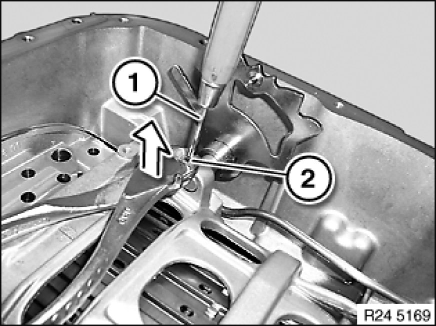
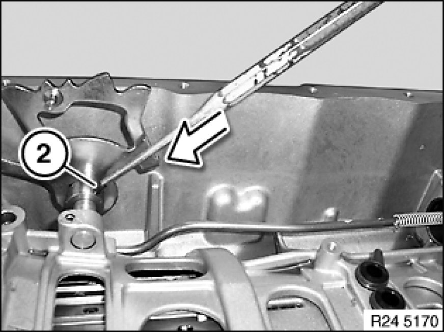

Selector Shaft: Service and Repair
24 50 030 - Replacing selector shaft (GA6L45R)

Important!
After completion of work, check transmission oil level Procedures.
Use only the approved automatic transmission fluid in this automatic transmission.
Failure to comply with this requirement will result in serious damage to the automatic transmission!

Necessary preliminary tasks:
- Remove mechatronics Removal and Replacement
- Remove selector shaft seal Replacing Selector Shaft Seal (GA6L45R)
- Remove transmission Removing and Installing Automatic Transmission (GA6L45R) (AWD only)

Drive a metal pin (1) - dia. approx. 3 mm - into clamping pin (2) (to prevent clamping pin from being compressed).
Grip clamping pin (2) with side nippers.
Note:
Illustration similar

Drive clamping pin (2) with a suitable tool out of selector shaft.
Remove selector shaft.